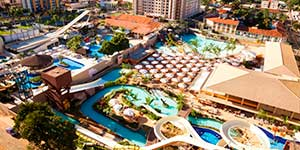

Caldas Novas

Caldas Novas é um municipio brasileiro do estado de Goiás.
O municipio é conhecido por ser a maior estancia hidrotermal do mundo, possuindo aguas que brotam do chão em temperaturas que variam de 43° a 70°. Na alta temporada, a cidade chega a comportar mais de 500 mil turistas.
Diversão
Custo